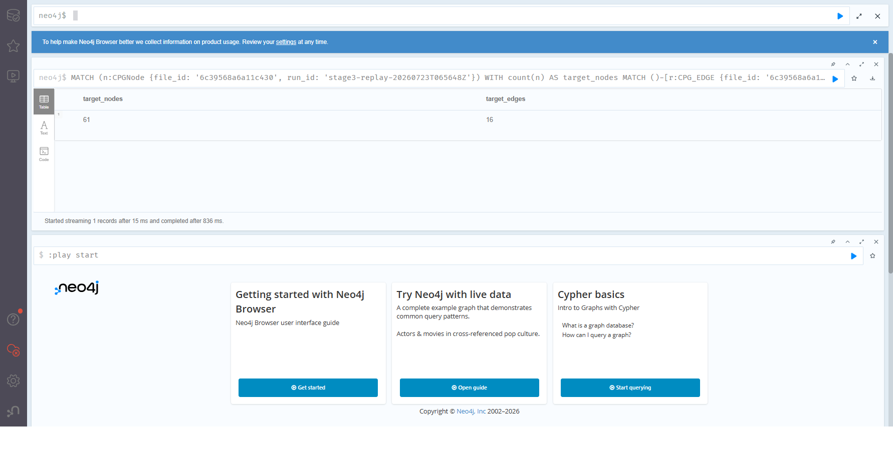

Task 4 — Direct Kafka-to-Neo4j ingestion#
Evidence summary
Field |
Value |
|---|---|
Evidence source |
Stage 2 connector/query artifacts plus Stage 3 UI evidence |
Command |
|
Route |
|
Run date |
|
Approach and reasoning#
Kafka Connect writes graph events directly to Neo4j; Spark is deliberately absent
from this route. Connector Cypher uses MERGE on stable IDs, while verification
queries compare database counts with unique Kafka IDs and reject duplicates.
Key implementation excerpts#
"config": {
"connector.class": "org.neo4j.connectors.kafka.sink.Neo4jConnector",
"tasks.max": "1",
"topics": "cpg.nodes,cpg.edges",
"key.converter": "org.apache.kafka.connect.storage.StringConverter",
"value.converter": "org.apache.kafka.connect.storage.StringConverter",
"value.converter.schemas.enable": "false",
"neo4j.uri": "neo4j://neo4j:7687",
"neo4j.authentication.type": "BASIC",
"neo4j.authentication.basic.username": "neo4j",
"neo4j.cypher.topic.cpg.nodes": "WITH __value AS event, coalesce(event.properties, {}) AS props MERGE (n:CPGNode {id: event.id}) ON CREATE SET n.created_at = event.event_time SET n.file_id = event.file_id, n.file_path = event.file_path, n.repo = event.repo, n.commit_sha = event.commit_sha, n.run_id = event.run_id, n.node_type = event.node_type, n.scope_path = event.scope_path, n.lineno = event.lineno, n.col_offset = event.col_offset, n.end_lineno = event.end_lineno, n.end_col_offset = event.end_col_offset, n.name = props.name, n.identifier = props.id, n.argument = props.arg, n.attribute = props.attr, n.module = props.module, n.literal_value = props.value, n.synthetic = props.synthetic, n.function_name = props.function, n.placeholder = false, n.updated_at = event.event_time",
"neo4j.cypher.topic.cpg.edges": "WITH __value AS event, coalesce(event.properties, {}) AS props MERGE (a:CPGNode {id: event.source_id}) ON CREATE SET a.placeholder = true, a.created_at = event.event_time MERGE (b:CPGNode {id: event.target_id}) ON CREATE SET b.placeholder = true, b.created_at = event.event_time MERGE (a)-[r:CPG_EDGE {id: event.id}]->(b) ON CREATE SET r.created_at = event.event_time SET r.edge_type = event.edge_type, r.file_id = event.file_id, r.file_path = event.file_path, r.repo = event.repo, r.commit_sha = event.commit_sha, r.run_id = event.run_id, r.extractor = props.extractor, r.target_name = props.target_name, r.resolution = props.resolution, r.variable = props.variable, r.target = props.target, r.function_name = props.function, r.updated_at = event.event_time"
// Neo4j evidence queries for notebooks and Jupyter Book.
// Run these after connector ingestion and after replay.
MATCH (n:CPGNode) RETURN count(n) AS node_count;
MATCH ()-[r:CPG_EDGE]->() RETURN count(r) AS edge_count;
MATCH (n:CPGNode)
WITH n.id AS id, count(*) AS c
WHERE c > 1
RETURN id, c;
MATCH ()-[r:CPG_EDGE]->()
WITH r.id AS id, count(*) AS c
WHERE c > 1
RETURN id, c;
MATCH (n:CPGNode {placeholder: true})
RETURN count(n) AS placeholder_count;
Executed evidence#
from pathlib import Path
import json
ROOT = next(
p for p in [Path.cwd(), *Path.cwd().parents]
if (p / "screenshots/stage2_manifest.json").exists()
)
manifest = json.loads((ROOT / "screenshots/stage2_manifest.json").read_text())
neo4j = manifest["metrics"]["neo4j"]
status = json.loads((ROOT / "screenshots/kafka/connector_status.json").read_text())
connector = json.loads((ROOT / "neo4j/sink_connector.json").read_text())["config"]
raw = {
name: (ROOT / "screenshots/neo4j" / name).read_text().strip()
for name in (
"node_count.txt", "edge_count.txt", "placeholder_count.txt",
"duplicate_nodes.txt", "duplicate_edges.txt"
)
}
print("connector status:", status["connector"]["state"])
print("connector class:", connector["connector.class"])
print("connector topics:", connector["topics"])
print("raw Neo4j query evidence:")
for name, text in raw.items():
print(f"[{name}] {text!r}")
print("manifest counts:", neo4j)
assert status["connector"]["state"] == "RUNNING"
assert all(task["state"] == "RUNNING" for task in status["tasks"])
assert connector["topics"] == "cpg.nodes,cpg.edges"
assert "MERGE" in connector["neo4j.cypher.topic.cpg.nodes"]
assert "MERGE" in connector["neo4j.cypher.topic.cpg.edges"]
assert neo4j["duplicate_node_groups"] == neo4j["duplicate_edge_groups"] == 0
assert neo4j["total_nodes"] == neo4j["explicit_nodes"] + neo4j["placeholders"]
connector status: RUNNING
connector class: org.neo4j.connectors.kafka.sink.Neo4jConnector
connector topics: cpg.nodes,cpg.edges
raw Neo4j query evidence:
[node_count.txt] 'node_count\n135198'
[edge_count.txt] 'edge_count\n38141'
[placeholder_count.txt] 'placeholder_count\n1935'
[duplicate_nodes.txt] 'No duplicate nodes found'
[duplicate_edges.txt] 'No duplicate edges found'
manifest counts: {'duplicate_edge_groups': 0, 'duplicate_node_groups': 0, 'edges': 38141, 'explicit_nodes': 133263, 'placeholders': 1935, 'total_nodes': 135198}
What this chapter proves#
Requirement |
Evidence |
|---|---|
Direct graph route |
Connector configuration consumes only node and edge topics. |
Successful sink |
Captured connector and task states are |
Graph materialization |
Raw Cypher outputs and manifest counts agree. |
Idempotence |
Duplicate node and edge groups are zero. |
Final database UI evidence#
Database UI evidence
Neo4j Browser from the canonical Stage 3 replay final state on 2026-07-23.
The query filters the replayed file_id and run_id; it returns 61 target
nodes and 16 target edges after stale cleanup.

Reflection#
Closing reflection
Point |
Result |
|---|---|
Worked |
Kafka Connect reached |
Failed |
The clean Stage 2 run had query files but no dedicated Browser capture. |
Resolution |
Stage 3 added a real hash-validated Neo4j Browser final-state image. |